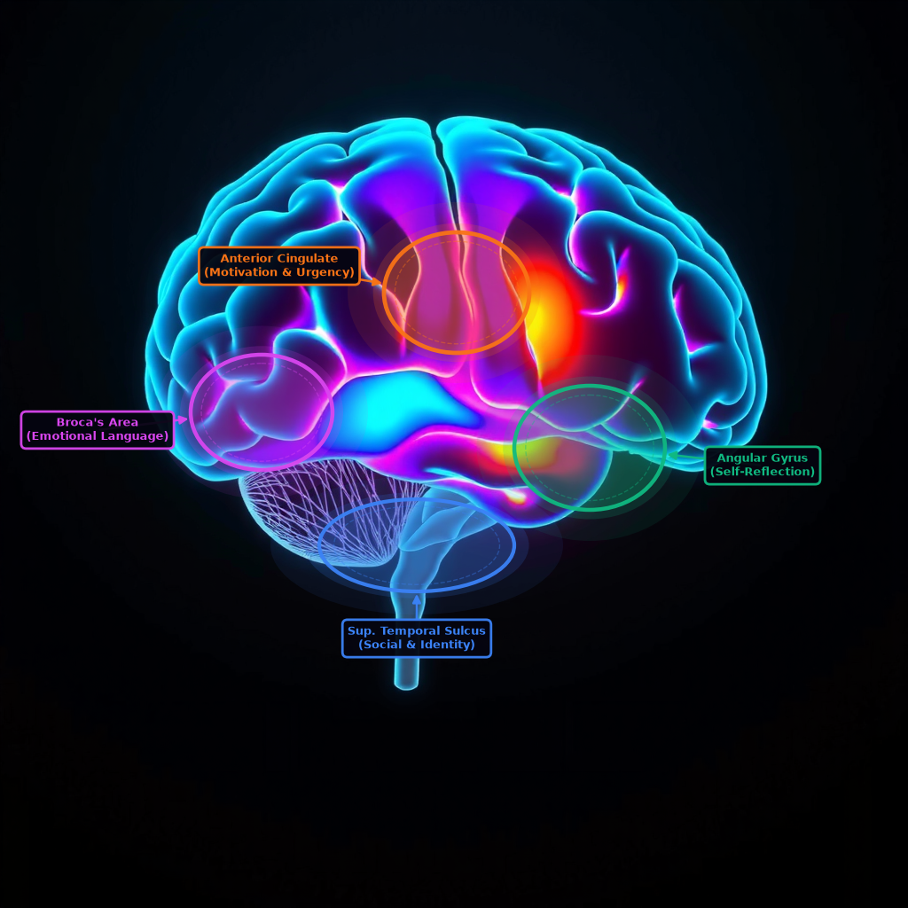
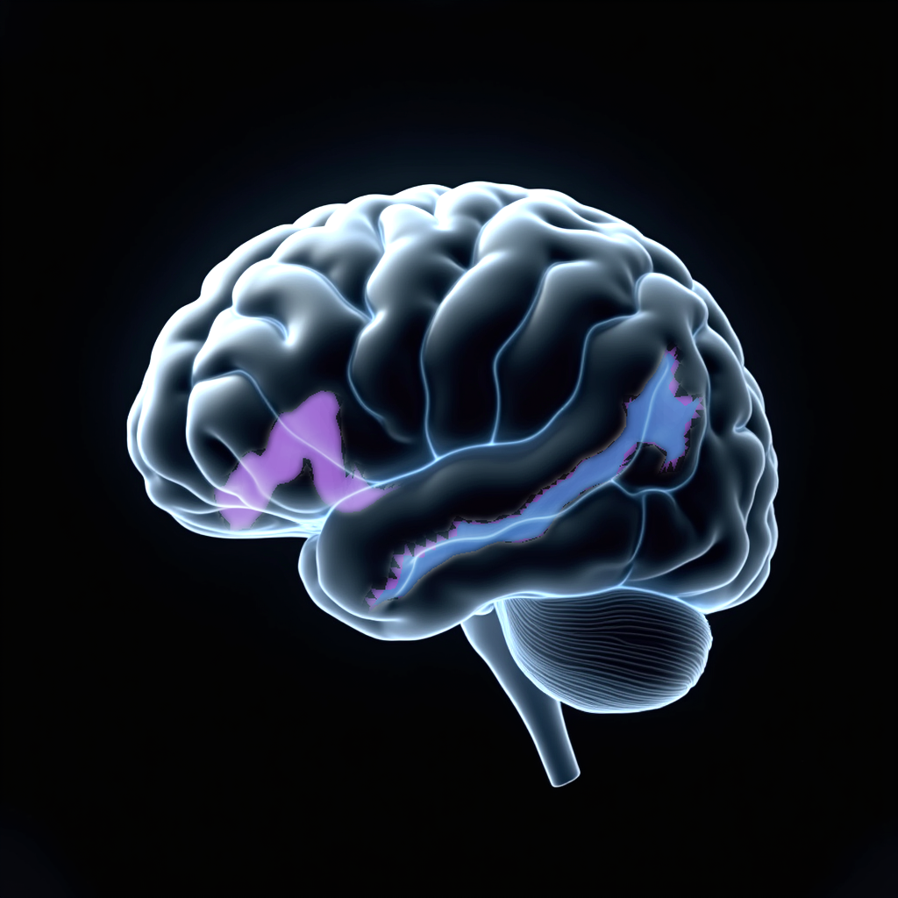
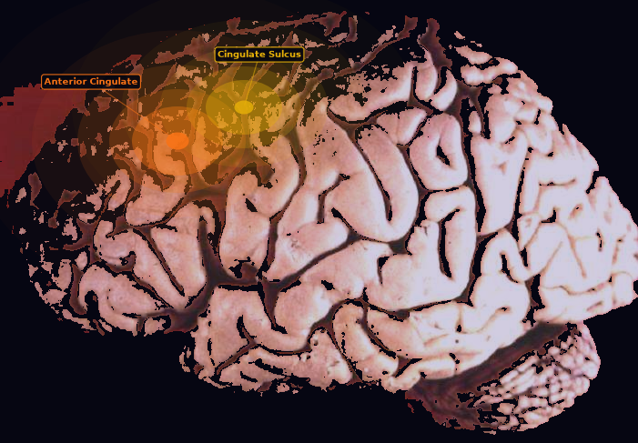
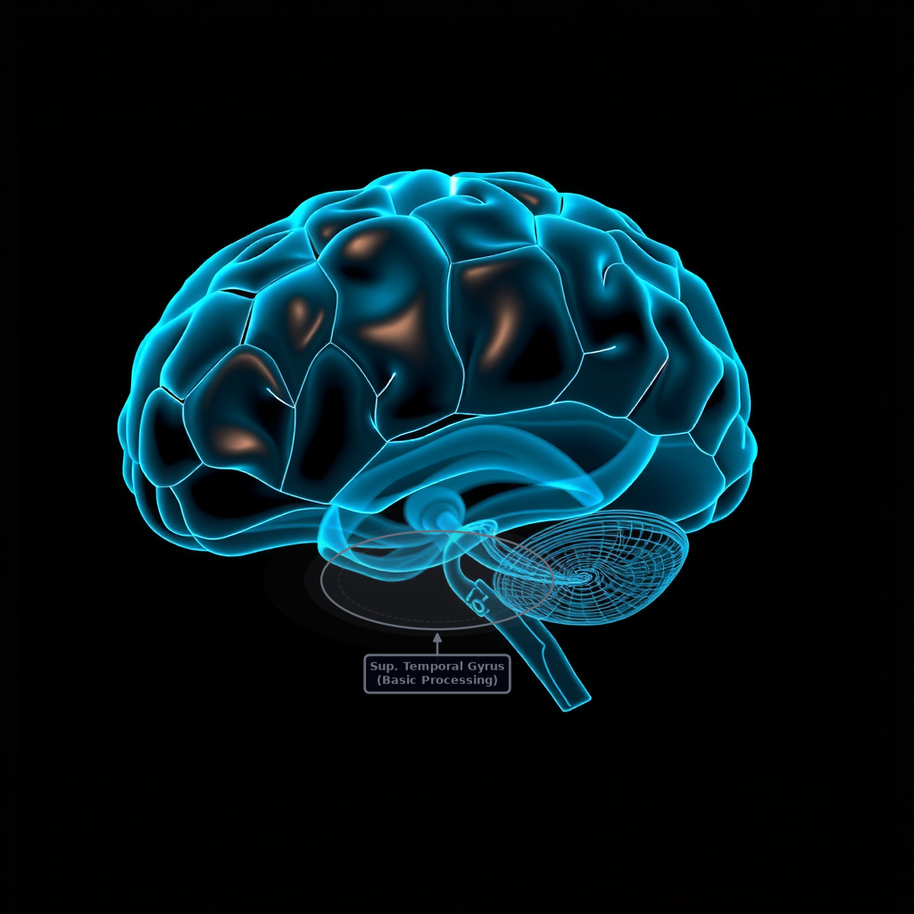

Real neural activation data from Meta's TRIBE v2 model — trained on fMRI scans from 700+ people. Each headline tested, each brain region decoded.
"Stop trading your time for money. AI can work while you sleep."

Lateral view — TRIBE v2 neural activation
"What if you could build a business that runs itself?"

Lateral view — TRIBE v2 neural activation
"The window is closing. People who act today will be years ahead."

Lateral view — TRIBE v2 neural activation
"Join 50,000 people who used AI to take back their freedom."

Lateral view — TRIBE v2 neural activation
The pattern
Dean's copy framework is neurologically validated. The headlines that activate self-referential and meaning-making regions outperform the ones built on social proof and urgency alone. The brain doesn't care how many people joined — it cares whether it can picture itself in the story.